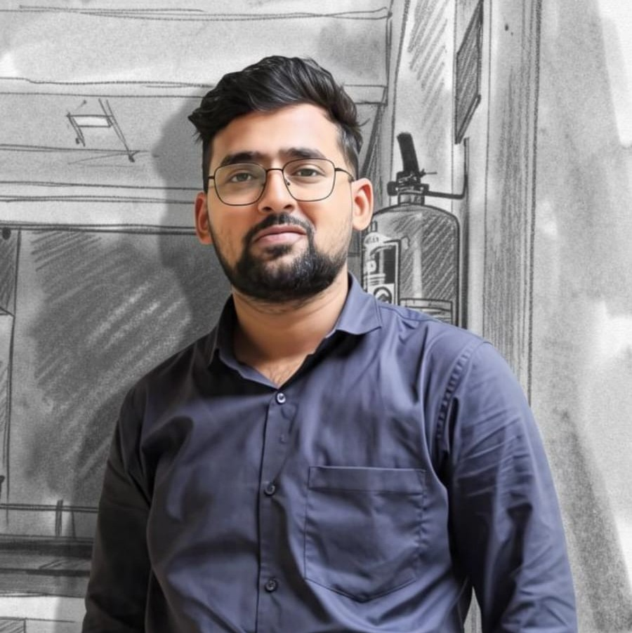
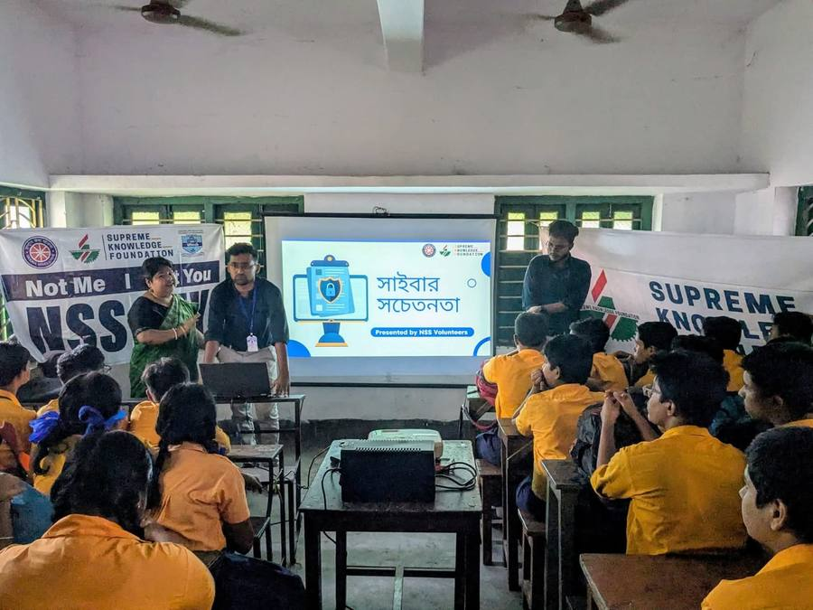
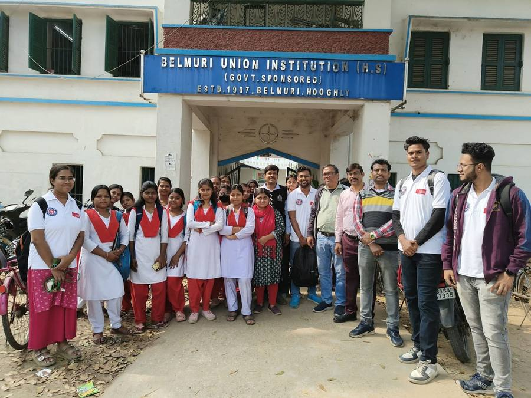

Results-driven cybersecurity student, OSINT practitioner, and independent cybercrime consultant with hands-on experience in digital footprinting, mobile forensic analysis, and open-source intelligence investigations — with a track record of resolving real cybercrime cases and leading community digital-literacy initiatives.

A quick look at the background, focus areas and strengths behind the work.
Cybersecurity student pursuing a B.Sc. in Cybersecurity, with a Bachelor of Arts foundation from Vivekananda Mahavidyalaya Haripal, based in West Bengal, India.
OSINT investigations, digital forensics and identity attribution — supporting law-enforcement style intelligence gathering and cybercrime victim resolution.
Building toward a career as a cybercrime investigator and digital forensics practitioner, combining OSINT tradecraft with SOC fundamentals.
Full-cycle OSINT, Google dorking, sock-puppet management, GEOINT/IMINT/SOCMINT analysis, Android APK forensics, and evidence chain-of-custody discipline.
Digital literacy advocacy — organising and speaking at cyber-awareness camps to help students and rural communities recognise and avoid online fraud.
Tactical resolution for real cybercrime victims: fraud triage, account isolation and incident reporting, all under strict investigative and evidentiary standards.
Internships, consultancy and volunteer leadership across cybercrime investigation.
Grouped directly from hands-on work — no invented proficiency levels.
Taking digital-safety literacy directly to students and rural communities.

Empowering young minds with cyber knowledge! We organised a Cyber Awareness Camp at Rishi Aurobindo Balkendram, Vidyalanka High School for Class 8 & 9 students. As students of cybersecurity, my aim is simple — to share what we learn and help our juniors build awareness about online safety.

"Life is indeed a circle! We eventually return to our past." Years ago, I used to walk through the gates of Belmuri Union Institution with a bag full of books and a head full of dreams. Today, standing in that same spot with the teachers who shaped me and the bright young minds of the future, I felt that circle complete. I had the absolute privilege of organizing and conducting a Cyber Awareness Camp at my own school.
Open to OSINT, digital forensics and cybercrime investigation opportunities — reach out directly.